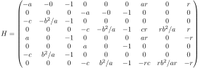
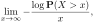
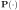
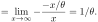
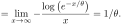
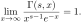
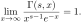

Next: August – dB logplot Up: Blog posts 2022 Previous: June – Gaussian vs. Contents
A simple but important observation for the July.
Let us consider two sinusoidal signals of opposite phases during the time
:
 and
 Obviously, the signals cancel each other completely and the mean power of the additive signal  is just 0:
is just 0:
![$\displaystyle \mathbb{E}[(S_1 + S_2)^2] = \int_0^1 (\cos(2 \pi t) + \cos(2 \pi t + \pi))^2dt = \int_0^10 dt = 0,$](img80.svg) |
(2) |
![$\mathbb{E}[\cdot]$](img81.svg) is the mean.
is the mean.
I we were a bit silly, we could try to add the powers of the signals separately together:
|  |  |
(3) |
 |
 ! Still, e.g. in the point process models of wireless networks, the signal powers are often summed as in (3). The often unmentioned assumption behind this has everything to do with the correlation
of the signals.
! Still, e.g. in the point process models of wireless networks, the signal powers are often summed as in (3). The often unmentioned assumption behind this has everything to do with the correlation
of the signals.
Let us assume that  and
and  are two signals. We have that
are two signals. We have that
|  | (4) |
![$\mathbb{E}[(S_1 + S_2)^2] = \mathbb{E}[S_1^2] + \mathbb{E}[S_2^2] $](img89.svg) holds if and only if the cross-correlation
 i.e. if the signals and are not correlated. Clearly, this is not the case with our initial signals, as then the cross-correlation is given by
holds if and only if the cross-correlation
 i.e. if the signals and are not correlated. Clearly, this is not the case with our initial signals, as then the cross-correlation is given by
![$\displaystyle \mathbb{E}[S_1S_2] = \int_0^1 \cos(2 \pi t) \cos(2 \pi t + \pi) d...
...i t )dt = - \frac{1}{2}\int_0^1 \cos(4 \pi t)dt - \frac{1}{2} = - \frac{1}{2},
$](img91.svg)
We used deterministic signals, but the same remarks apply to random signals or general random variables.
References: